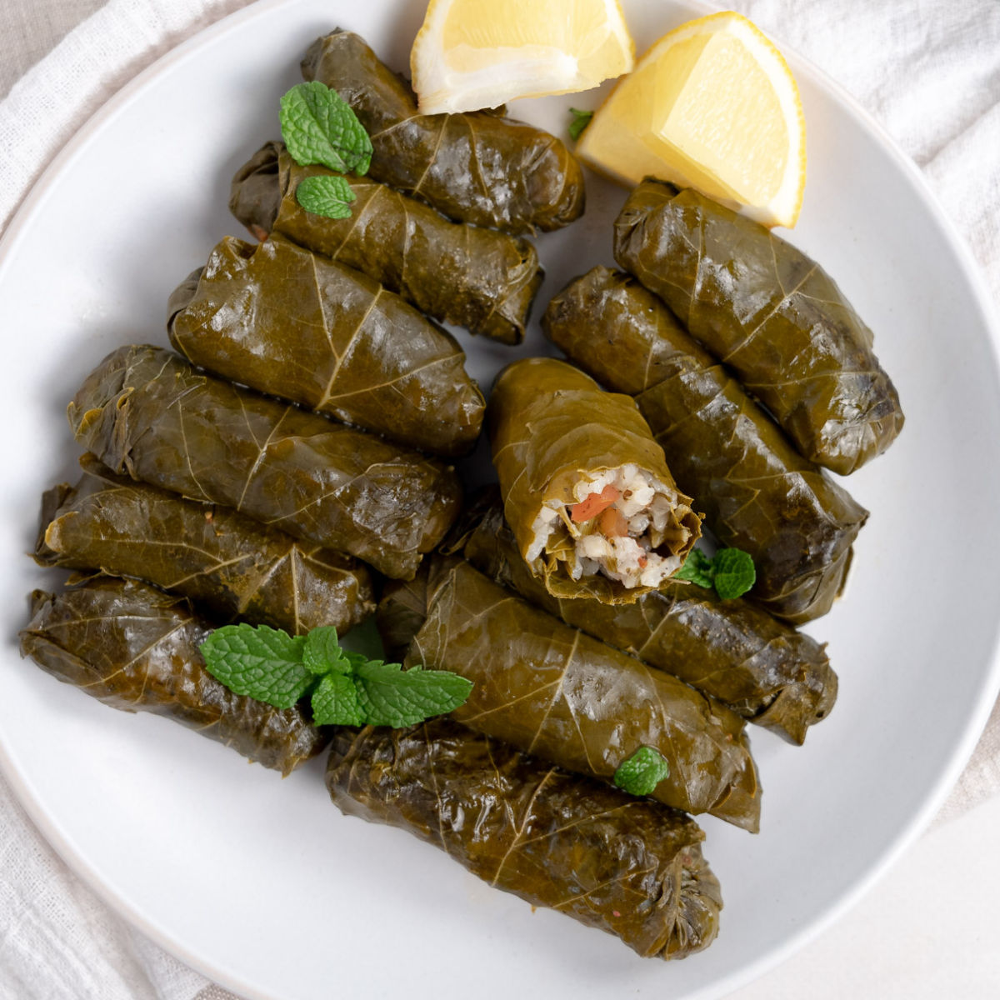

Back
Warak-Enab

Description
Egyptian Warak Enab is a delightful Middle Eastern dish of stuffed grape
leaves. Tender grape leaves are filled with a flavorful mixture of
seasoned rice, aromatic herbs, and sometimes minced meat.
The leaves are carefully rolled to create neat little parcels, and the
dish is often enjoyed as an appetizer or a main course. Warak Enab offers
a delightful blend of textures and tastes,
with the tangy grape leaves complementing the savory and fragrant filling.
Whether served hot or cold, this traditional Egyptian dish is a true
culinary delight that reflects the richness of the region's flavors and
traditions.
Ingredients
- preserved grape leaves or fresh grape leaves
- for filling: long-grain rice
- vegetable broth
Steps
-
Prepare the filling:
-
In a bowl, mix cooked rice with finely chopped onions, minced
garlic, fresh parsley, dill, vegetable oil, tomato paste, ground
allspice, ground cinnamon, salt, and pepper. If making a meaty
version, add cooked and seasoned ground beef or lamb to the mixtu
-
Roll the stuffed grape leaves
- Lay a grape leaf flat on a work surface, shiny side down.
-
Add the minced garlic and sauté for a minute or until fragrant
-
Place a small amount of the filling near the base of the leaf.
-
Fold the sides of the leaf over the filling, then roll it tightly
into a neat parcel.
-
Cook the stuffed grape leaves
-
Arrange the rolled grape leaves in a pot, placing them close
together to prevent them from unraveling during cooking.
-
Cover the stuffed grape leaves with water or vegetable broth, and
add lemon juice and olive oil for flavor.
-
Simmer the grape leaves over low heat for about 30-40 minutes until
the rice is fully cooked and the flavors meld together.
- Serve and enjoy